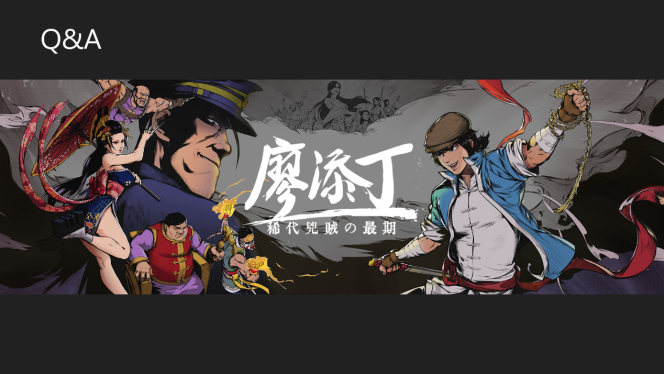
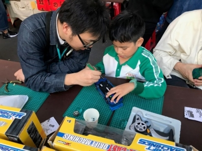
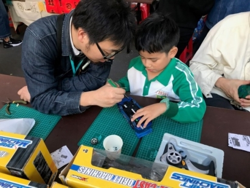
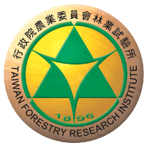
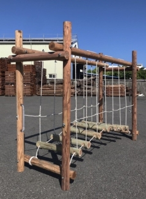
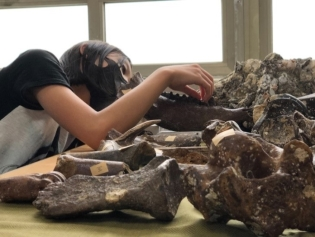
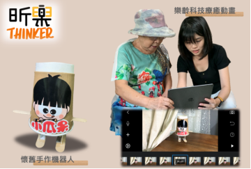
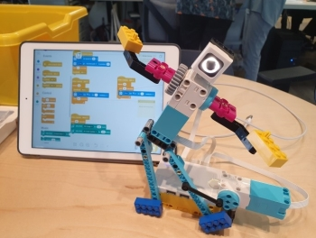
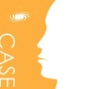

★攤位介紹—教育創新區
地點：國立臺灣科學教育館 7樓西側特展區
▲702 主題攤位
創遊遊戲—廖添丁 稀代兇賊の最期
活動時間：11/6-7 10:00-17:30，11/6 18:30-21:00
介紹：
創遊遊戲致力於讓世界更多看見台灣故事，團隊作品《廖添丁 - 稀代兇賊の最期》是一款2D動作橫軸平台遊戲，以復古武俠漫畫風格呈現，玩家操作身懷絕技的廖添丁，體驗爽快流𣈱的動作關卡，遊歷20世紀初的大台北風貌。
粉絲專頁：https://www.facebook.com/LiauThiamTingGame/
設攤單位：創新遊戲股份有限公司

伴伴學 Accomdemy
活動時間：11/6-7 10:00-17:30
介紹：
伴伴學是由一群來自科技圈、新創圈、教育圈的夥伴們自發性組成的自學組織。Accomdemy = Accompany + Academy，我們希望透過陪伴式學習的線上分享會，讓每個想自學的人在自學的路上有趣又不孤單！
官方網站：https://www.accomdemy.org/
設攤單位：伴伴學 

蟻客世界
活動時間：11/6-7 10:00-17:30，11/6 18:30-21:00
介紹：
我們是一個致力於科普推廣與藝文創作的團隊。希望把最新的科學成果轉化成大眾能感興趣的內容。用藝術展現自然科學的美妙。我們期望能講好科學與科學家的故事，並且透過創意產品，提供科學愛好者富有深刻科學內涵的文學作品與紀念品。
粉絲專頁：https://www.facebook.com/antguests
設攤單位：蟻客世界
林業試驗所—享受木構造輪廓
活動時間：11/6-7 10:00-17:30，11/6 18:30-21:00
介紹：
歡迎體驗林業試驗所森林利用組所研究的木構造設施！在現場你可以看到「展閱木桁架結構」與「體驗休閒式吊橋」的木製模型，認識木材榫接工法下的現代結構創作、以及不同於公園制式罐頭遊具的休閒設施、充分享受原木素材的魅力！
官方網站：https://www.tfri.gov.tw/main/index.aspx
設攤單位：行政院農業委員會林業試驗所
 
無界塾—來自過去的排骨便當：澎湖化石大發現！
活動時間：11/6-7 10:00-17:30
介紹：
台灣也有化石嗎？台灣的化石是多久之前形成的呢？去哪裡可以找到呢？
歡迎來到「來自過去的排骨便當！」，我們有輕鬆而且療癒的化石清理課程！想要與數萬年前的生命接觸嗎？這裡你可以學習化石的知識，甚至獲得一份化石紀念品！
粉絲專頁：https://www.facebook.com/Btseducationschool/
設攤單位：無界塾

當樂齡遇上微科學小創意
活動時間：11/6 10:00-17:30
介紹：
樂齡X創意X科學，看似衝突、似遠非遠的關鍵字，在這疫情也抵擋不了融合爆炸的驚奇，三者間所擦出的火花耀眼動人。跟著我們的腳步，微微跳出框架，一起深入體驗樂齡X創意X科學所帶來的全新風貌吧！
設攤單位：昕樂認知暨健康促進有限公司

輕鬆玩大腦，老化沒煩惱
活動時間：11/7 10:00-17:30
介紹：
臺大醫學院之樂高機器人程式設計及大腦加油站以促進長者認知健康
臺灣人口正在快速高齡化，除了身體健康，我們也要顧顧大腦的認知健康喔！透過12週樂高機器人程式訓練課程，動動手、動動腦，讓大腦更靈活，使學到的能力能夠轉換到日常生活中！也歡迎到大腦加油站檢測大腦的健康程度，並一起進行刺激好玩的桌遊活動！
LINE官方帳號：https://line.me/R/ti/p/%40035vqood
設攤單位：臺大腦心所與職治系實驗室群

臺灣大學科學教育發展中心
活動時間：11/7 10:00-17:30
介紹：
台大科教中心十多年來辦理諸多優質科普活動均上網公開供民眾點選參與，也將透過『探究與實作，一起苦惱不寂寞』微型工作坊協助師生家長。疫情或後疫情，居家或課堂，我們隨時隨地與你一起感受科學的美好。
＊攤位活動：『探究與實作，一起苦惱不寂寞』微型工作坊，詳情請洽攤位
官方網站：https://case.ntu.edu.tw/
設攤單位：臺灣大學科學教育發展中心
